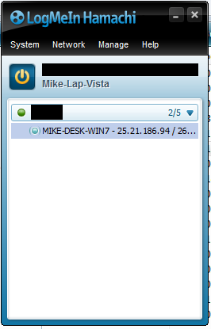

Hi! If you're reading then you have, intentionally or otherwise, signed up to be a beta tester for my shit! Thanks! You're super cool.
In order for you to get access to builds and the bug tracker you'll need to connect to my computer. Since I can't host a server right now and I don't own a virtual private server you'll have to connect directly via VPN. That's what this guide is going to help you with.
To connect to my computer we'll be using Hamachi, which provides VPN services. In order to do use Hamachi, follow these steps.
Simply go to the Hamachi download site (link!). Agree to the CONDITIONS OF USE at the bottom, then click the DOWNLOAD NOW button under the UNMANAGED heading.
Open the installer (hamachi.msi). You can just accept all the defaults.
Launch Hamachi (there's probably an icon on your desktop). Click the big power button like it tells you to. It will then present you with a YOU MUST SIGN UP screen.
Look for the link at the bottom that says SEND THEM AN ATTACH REQUEST (it should be blue) and click that. Enter my email then click ATTACH.
Now you'll have to wait for me to get off my ass and accept the request. If you tell me it'll speed up the process.
Once I accept you'll be presented with a JOIN AN EXISTING NETWORK button; click it! Enter in the server and password I provided then click JOIN.
If successful you'll get something like this:

The four numbers next to MIKE-DESK-WIN7 is my IP (in the image it's 25.21.186.94). Enter that number into your browser, followed by :8080 (so 25.21.186.94:8080) then hit enter. That should connect you to my bugtracker!
The front page will have more info (e.g. how to download, how to create tickets, etc.).